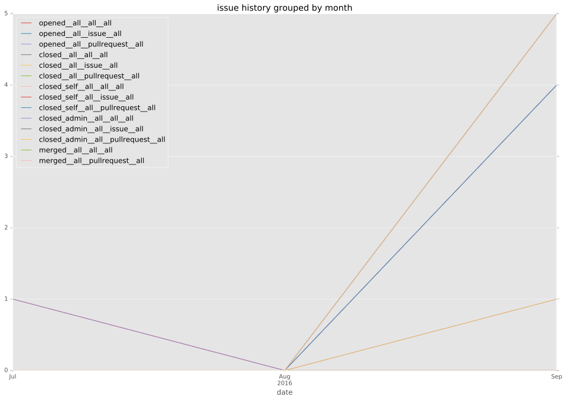
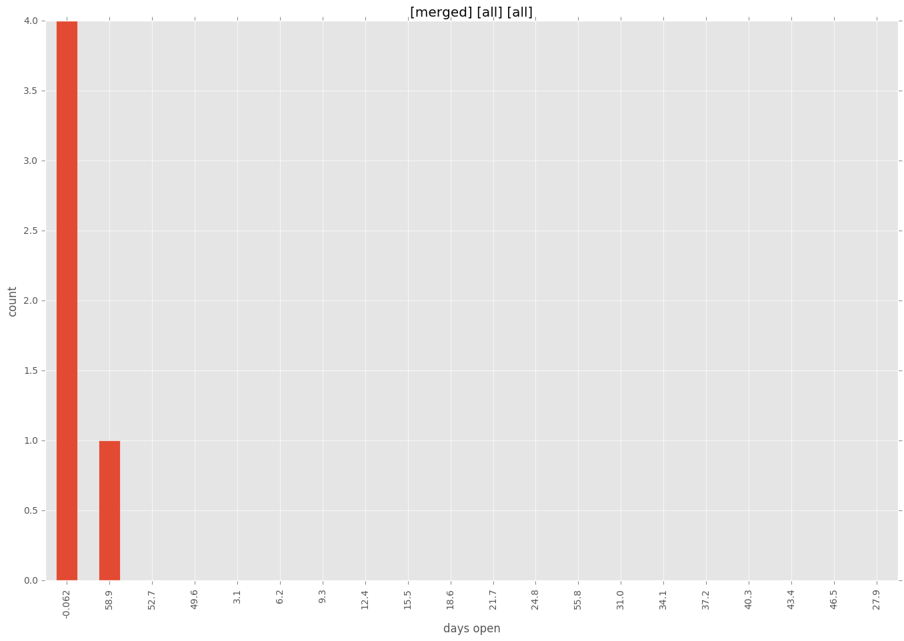
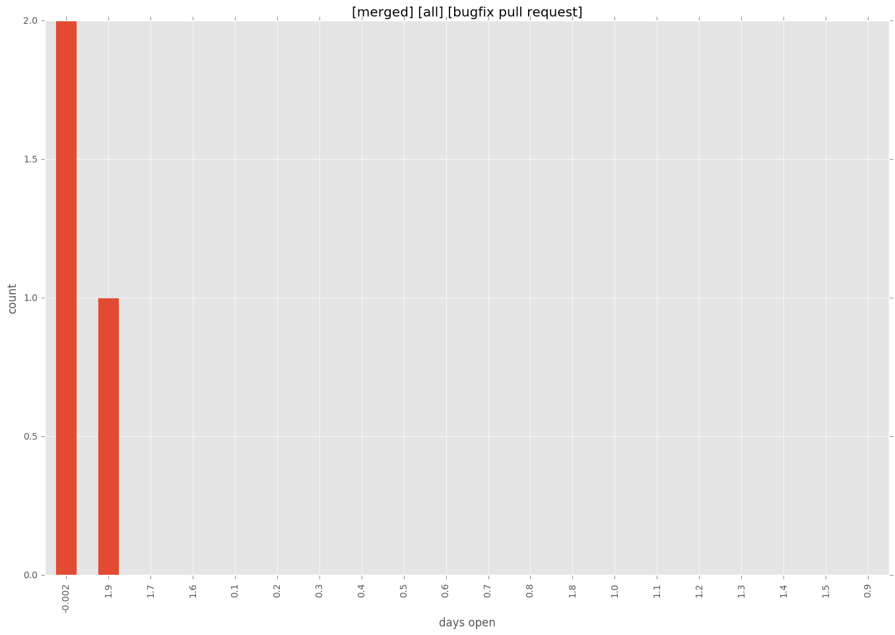
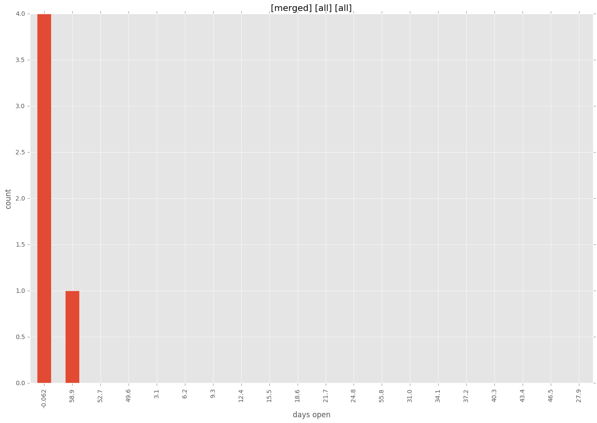
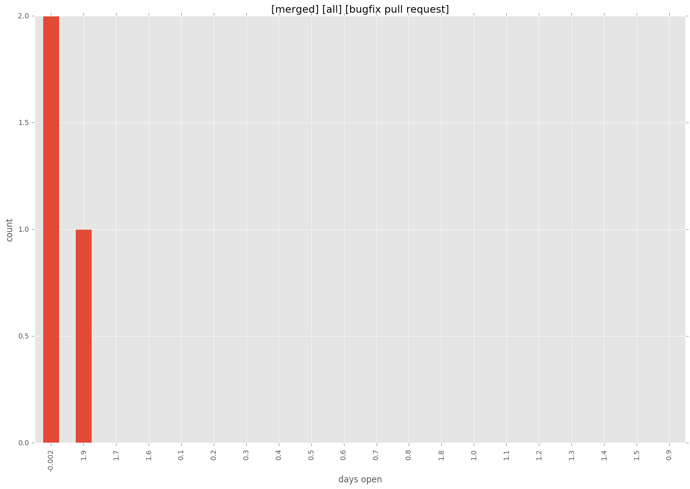

total issue counts
feature pull request: 1
bugfix pull request: 3
pullrequest: 5
new plugin: 1
issue history

days open by issue type
feature pull request
count: 2
std: 0.0
min: 2
max: 2
median: 2.0
mean: 2.0
bugfix pull request
count: 6
std: 1.03279555899
min: 0
max: 2
median: 0.0
mean: 0.666666666667
all
count: 10
std: 25.7371327074
min: 0
max: 62
median: 2.0
mean: 13.2
pullrequest
count: 0
std: nan
min: nan
max: nan
median: nan
mean: nan
new plugin
count: 2
std: 0.0
min: 62
max: 62
median: 62.0
mean: 62.0
closures grouped by total days open


 


